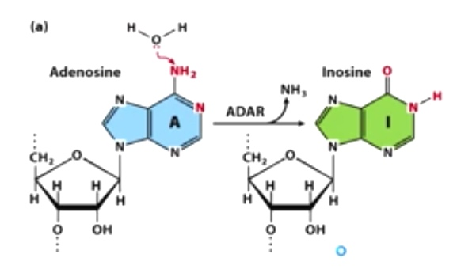
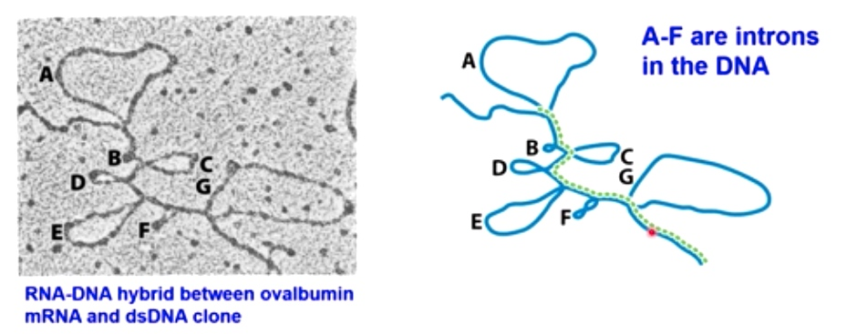
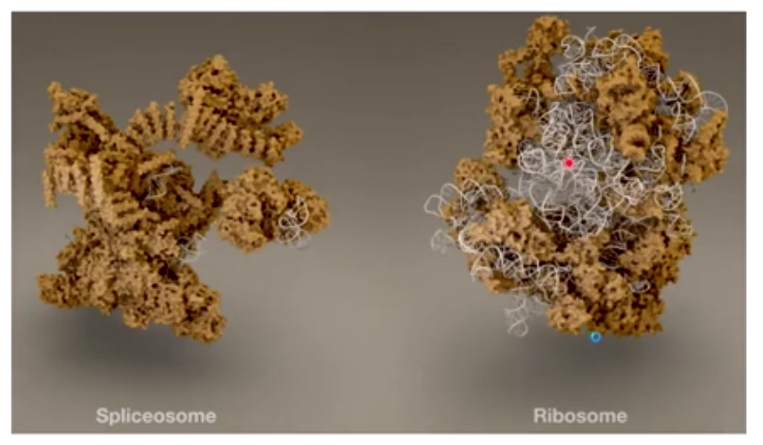
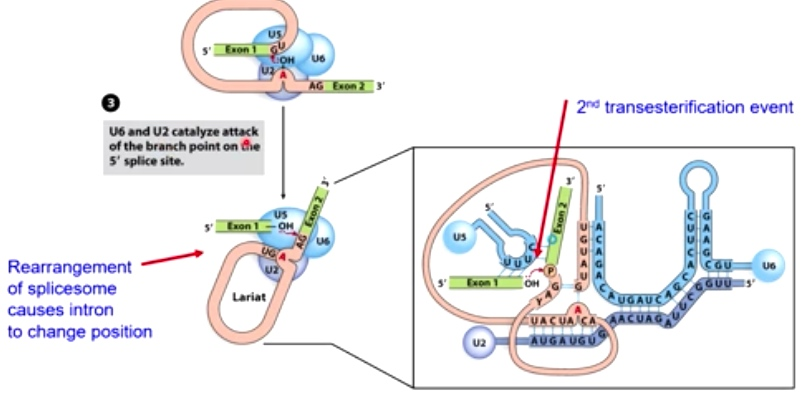

This week,examine eukaryotes process newly-transcribed mRNAs and how the different steps of mRNA processing are regulated. The splicing work and how alternative splicing generates amazing protein diversity.
A special treat: a medical case study that illustrate how aberrant splicing can lead to human disease and possible ways to treat it.
Chromatin and Transcription
Specific in eukaryotes, because bacteria do not have chromatins.
Chromatin can be modified in several ways to regulate gene expression
- Nucleosome composition(HH1 and variant histones)
- They can have different effects on chromatin and gene expression
- Nucleosome remodeling complexes
- Bind to or either remove, add or migrate nucleosome throughout the genome to allow for different gene expression.
- Histone and DNA modification
- Modify histone and DNA with various chemical modifications that result in downstream effects on transcription and gene expression.
Nucleosomes can be moved/exchanged by chromatin remodeling enzymes
Use ATP hydrolysis to do these things.
One model for nucleosome repositioning
DNA painted orange is wrapped around by histone can be moved so the DNA will be exposed.
Histone and DNA modification
Histone tails
Histone tails extrude far from the nucleosome
Histone tails can be modified in several ways
Triangle here represents the nucleosome core.
The modification number on N-terminal tail is much more than it on C-termminal tail.

- Phosphorylation: S, T, Y
- Acetylation: K
- Methylation: K, R
- Ubiquitination: K
Chemical Structure of Histone Modifications
-
Acetylation of Lys residues
Acetyl group neutralizes(+) the positive charge of lysine. In doing so, decrease the attraction of the negatively charged DNA to the positively charged lysine side chain. So the acetylation opens up the chromatin structure. Makes it easier to access the DNA. -
Methylation of Lys residues.
-
Methylation of Arg residues
Methylation has no effect on charge. So the impact of methylation is very complex. Sometimes result in open chromatin structure and somestimes result in close chromatin structure. Depends on protein interact with methylation. -
Phosphorylation of Ser, Thr, and Tyr residues.
Add (-) charge. Most of the time will further open up the chromatin structure, result in active gene expression. -
Ubiquitin is a small polypeptide that can covalently attach to other proiteins(like histones) to change their function
There are two lysines on ubiquitin protein where other ubiquitins can be conjugated.poly-ubiquitylation So ubiuqitin can help reruit other proteins to modification.
Histone Modifications can cooperate to establish a chromatin state
The state can be active or repressive.
If Ser10 is phosphorylated first, an activated state is established. In which Lys 14 on histone H3 will be acetylated and Lys9 will be prevented for having a repressive methyl group ligated to that.
If Ly9 is methylated first, a repressive state is established, which will prevent phosphate of Ser10, then prevent acetylation of Lys14.
Depending on which happened first, we can have either activation or repressive transcription.
Enzymes that catalyze histone modifications
- Open chromatin: bromodomain protein. binds to Ac-K
- Closed chromatin: chromodomain protein. binds to Me-K
Several Processes canc Synergize to Regulate Transcriptional Activation
From complete repressive state to actvie state.

We start the repressive state. TATA box, place have eukaryotes transcription factors binding to initiate transcription. We want to expose this, to get out of the repressive environment.
We are going to recuit a histone acetyle transcripse(HAT) called Gcn5, which will acetylate H3 and H4 by acetylated the lysine 9 and lysine 8.
Then acetyle group called protein kinase will phosphorylate other proteins. In doing so, it will recruit additional HAT that can engaging second acetylation event.
So we phosphorylate on H3 Ser10 caused lysine 14 being acetylated.
Now we start to open up this chromatini structure, which will allow the recuitment of chromatin remodeling enzymes. (SWI/SNF) to move the nucleosome.
In doing so, once the nucleosome has been moved, which will expose the TATA box, allows for TFIIID and all other core transcription factors to bind, which can then result in active transcription if immediator protein or additional ltranscription enhancers are found here.
Without modifying the protein, we can directly modify DNA itself. This usually cause a repressive effect.
DNA methylation also represses gene expression
Start from active transcription witth activators and mediator.
After dissociation of activators, methylation will happen on cytosine at CpG(cytosine of guanine) islands. Such methylation will turn off transcription. Also further repress transcription by recruit histone deacetylase and chromatin remodeling complex.
Mutation in the above process will cause diseases. One mutation is called MeCP2.
Lossing methyl binding protein MeCP2, typically find in females. Because gene encode MeCP2 is on X chromosome. Male has such mutation will die before birth.
RNA Processing in Eukaryotes
mRNA processing is different in bacteria vs. eukaryotes
In bacteria, transcription and translation happen simultaneously. Because there is no physical separation.(nucleous)
- mRNA is transcribed in nucleus.
- Various processing events happen including 5' cap. Removal of the introns and addition of polyA tail.
- Then protein helps mRNA export to cytoplasm.
- Ribosome binds to 5' cap to start translation.
In both cases, The amout of protein produced can be regulated through the amount of mRNA degradation.
The CTD tail of RNA pol II recruits RNA processing enzymes
CTD:carboxyl terminal domain.
The phosphorylation state dictate what processing factors is going to be recruited.
During promoter escape, Ser 5 gets phosphorylated by TFIIH kinase.
TFIIH kinase is really important in translation of eukaryotes. Then will add cap at 5' of mRNA.
During elongation, P-TEFb will phosphorylate Ser 2. phosphotase will remove phosphate on ser 5. This helps to recruit splicing and other elongation factors.
A 7-methyl guanine cap is added to the 5' end of the mRNA.
The first stage of eukaryote mRNA processing.
7-Methyl-guanasine is linked to the rest of mRNA through 5',5'-Triphosphate linkage. which will
- Prevents degradation by exonucleases
- Needed for proper splicing and translation
The enzyme doing this is called Guanylyltransferase, which is associated with Pol II CTD to ensure that each mRNA is capped as it is transcribed.
Once the cap is complete, the guanylyltransferase dissociates and the cap-binding complex(CBC) binds.
Polyadenylation and termination are tightly linnked in eukaryotes
At the end of mRNA transcription
Also dictated by phosphrolation on CTD of Pol II.
When Pol II is transcribing through the polyA addition site.
Consensus sequence:
- 5' AAUAAA is 10-30 nt upstream of cleavage site.
- GU-rich sequence 20-40 nt downstream of cleavage site.
These two consensus sequences position the polyadenylation factor to bind to polyA signal, indicating mRNA cleavate. Also the whole complex will cause the endonuclease to cleave mRNA between these two different consensus sequences. PolyA polymerase(PAP) will synthesize a polyA tail(80-250 As) right downstream the mRNA been cleaved. PolyA binding protein will binds to this tail to protect the 3' of mRNA from degradation.
Worth mentioning is pol II will continue transcribing after this cleave action. There are other action to terminate its action.
Summary: RNA pol CTD coordinates transcription and pre-mRNA processing
After all these stuff, result in a capped and polyA tailed mRNA.
However, the sequence of mRNA is not always determined by the sequence of DNA.
There is process called RNA editing, which can change primary sequence of mRNA after it is been transcribed.
RNA editing: a way to change the coding potential of genes
Example 1: A-to-I editing by adenosine deaminase(ADAR)

Indosine here is going to change the coding potential of mRNA. Gln -> Arg.
Glutamate receptor channel allows for calcium signaliing in the brain.
ADAR-mediated editing results in dramatical altering the channel properties.
Example 2: C-to-U editing by cytosine deaminases and APOBECs
RNA editing create an early stop codon that results in a shorter from of ApoB.
This form assists with the absorption of lipids in the intestine.
How the processed mRNA find their ways outside the nucleus into the cyroplasm in eukaryote cells.
Movement of mRNAs into and out of the nucleus
Primary mRNA will be processed and spliced.
EJC(exon junction complex)
- EJCs are left behind on the processed mRNA following splicing
- EJCs and the cap-binding complex(CBC) are important for mRNA transport out of the nucleus.
CBC is at the end of CTD tail. SR act with splicesome to promote mRNA splicing. Cap-binding complex will recruit addtional proteins together with EJC allow for the binding and transport of mRNA from nucleus into cytoplasm.
Splicing
Objective:
- Identify consensus sequence that are important for splicing in eukaryotes
- How RNA and proteins add together to carry out this reaction.
How Splicing First Been Discovered? -- R-loop Analysis
Electron microscopy provides evidence for the existence of introns

The loops are the introns.
Intron numbers increase with complexity of gemones
Overview of Eukaryotic mRNA splicing and processing
Splicing happens co-transcriptionally!!!
Consensus sequences that are critical for splicing
GU ---------- AG is the most highly conserved consensus sequences
Unpaired A in th emiddle of a pyridine-rich region
Overview of splicing: 2 Transesterification Reactions
- The branch-point 2'-OH attacks the 5' splice site.
- The 5' splice site is now activated to attack the 3' splice site.
- The intron is released from the spliced mRNA as a lariat.
Transesterification 1
2'-OH attacks the 5' splice site.
Transesterification 2
3'OH of exon 1 attacks 3' splice site of intron
Helper Complex: The spliceosome is composed of RNA and protein
- ~150 proteins
- 5 small nuclear RNAs(snRNAs) U1, U2, U4, U5, U6
- RNA complexed with proteins. Small nuclear ribonuclease proteins(snRNPs)
- **RNAs are thought to do the catalysis

In splicesome, RNA only do the catalysis, so there is only a little white in splicesome.
Overview of Spliceosome-mediated Splicing Reaction
- U1 binds the 5' splice site
- U2 binds the branch site
- Together with other proteins
-
Then snRNPs: U4, U5, U6 will come to recruit
-
U1 leaves
-
Now there is a loop in the intron.
-
U2 and U6 snRNAs help catalyze the first transesterification reaction
-
U4 leave
-
U5 helps bring the exons together
-
Second transesterification reaction produces joined exons.
Spliceosome-mediated splicing reaction
1. U1 binds to the 5' splice site; U2 binds to the branch point
RNA-RNA hybrids mediate splicing specificity.
2. The U4-U5-U6 trimeric snRNP displaces U1 at the 5' splice site, then U4 dissociates
Extensive base pairing ensures specificity during splicing.
3. U6 and U2 cataluze the attack of the branchpoint on the 5' splice site

4. The 5' splice site attacks the 3' splice site, completing the reaction
Other Types of Intron Splicing Mechanisms
Group II Self-splicing
Found in bacteria, fungi, organelles
Catalyze their own splicing
Use a mechanism similar to the spliceosome, but only use RNA(no proteins)

Group I Self-splicing
Instead of Ademine, here is a guanine.
Also, the intron becomes linear.
Self-splicing introns have complex secondary structures
mRNA Splicing
Ways to Excise mRNA
- Proteins
- Ribonucleoproteins
- Self-excising
Transesterificatioin Reactions
In which two phosphodiester bond is broken. And replaced with an energetically equivalent phosphodiester bond without net input of energy.
Mechanism of Spliceosome-mediated Splicing
Splicing in Eukaryotes is catalyzed by the splicesome. A large ribonucleoprotein machine.
The spliceosome is composed of five individual spall ribonucleoproteins. U1, U2, U4, U5 and U6.
Consensus Sequence
- GU of the 5'
- AG at the 3'
- A branch point nucleotide A 10-20 upstream of 3' site.